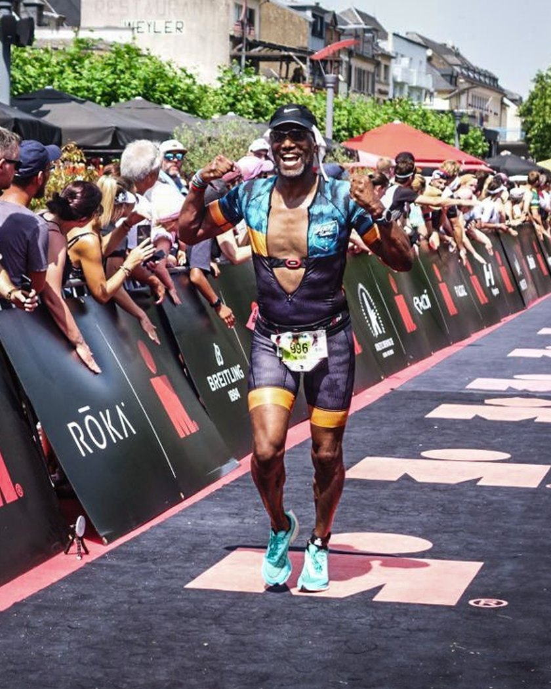

Docent, projectleider, triatleet. En nu coach.
Ik weet hoe het is om alles zelf uit te moeten zoeken. Daarom doe ik dit.

Ik ben Ryan Douglas, docent informatica geweest en nu projectleider bij het Havenbedrijf Rotterdam. Triathlon kwam later in mijn leven. Ik begon met hardlopen, pakte de racefiets erbij en moest leren zwemmen zoals de meeste beginners dat moeten: met moeite, met te veel water in mijn neus en met het idee dat iedereen in de baan naast me het beter kon.
Wat mij hielp, was wat ik van huis uit kon: data lezen en techniek gebruiken. Ik bouwde een eigen trainingsapp, maakte een viewer om onderwaterbeelden van mijn zwemslag frame voor frame te bekijken en leerde mijn Garmin-data echt te begrijpen. Zo werd ik stap voor stap een betere zwemmer, fietser en loper. Inmiddels staan er vier hele triathlons op mijn naam (Almere 2019 en 2025, Ironman Maastricht 2022, Challenge Roth 2025) en meer dan tien halve, liep ik in 2026 de marathon van Rotterdam in 3:30 en finishte ik de Ironman 70.3 in Luxemburg. Op mijn 57e. Volgend jaar staat Ironman Kopenhagen op de kalender. En zwemmen doe ik het hele jaar buiten, ook als het water tegen de vijf graden loopt.
Toen een clubgenoot vroeg of ik hem wilde helpen met zijn 10 km-doel, merkte ik hoeveel plezier ik daaruit haalde: iemand zien groeien doordat je samen de goede dingen doet. Ik heb gesprekken gevoerd met andere coaches om samen iets op te zetten, maar besloot in oktober 2026 het gewoon zelf te doen. Onafhankelijk, klein en persoonlijk. Niet omdat ik er een bedrijf van wil maken, maar omdat ik het leuk vind en omdat ik weet hoe het is om het in je eentje uit te moeten zoeken.
Resultaten
Allemaal zelf gedaan, allemaal na te kijken.
Hele triathlons: Almere 2019 en 2025, Ironman Maastricht 2022 en Challenge Roth 2025. Volgend jaar: Ironman Kopenhagen. Daarnaast meer dan tien halve triathlons, waaronder Ironman 70.3 Luxemburg (2026). Allemaal uit mijn eigen horloge en wedstrijduitslagen, en dat op mijn 57e. Lid van TVS'90 (triathlon) en CS010 (wielrennen).
Clubs en achtergrond
Ik train bij TVS'90, de triathlonvereniging van Rotterdam, en fiets bij CS010. Van huis uit ben ik docent informatica geweest en werk ik als projectleider. Die combinatie, lesgeven en dingen gestructureerd aanpakken, is precies wat ik in het coachen gebruik: uitleggen waarom je iets doet, en een plan dat klopt.
Ik ben geen fysiotherapeut en geen diëtist. Bij blessures of medische vragen verwijs ik je door naar iemand die daar wél voor heeft doorgeleerd.
Zullen we kennismaken?
Een half uur bellen of koffie in Rotterdam. Gratis, en je zit nergens aan vast.